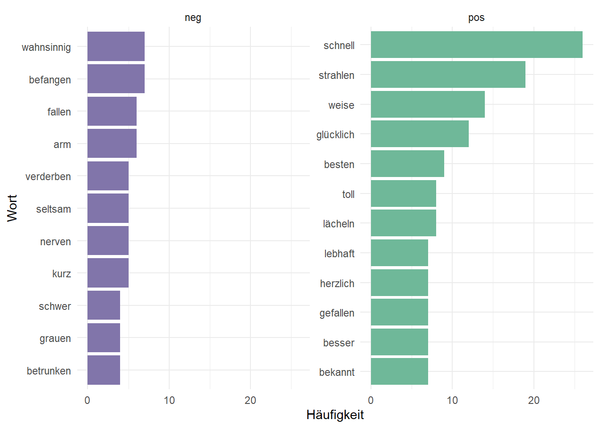
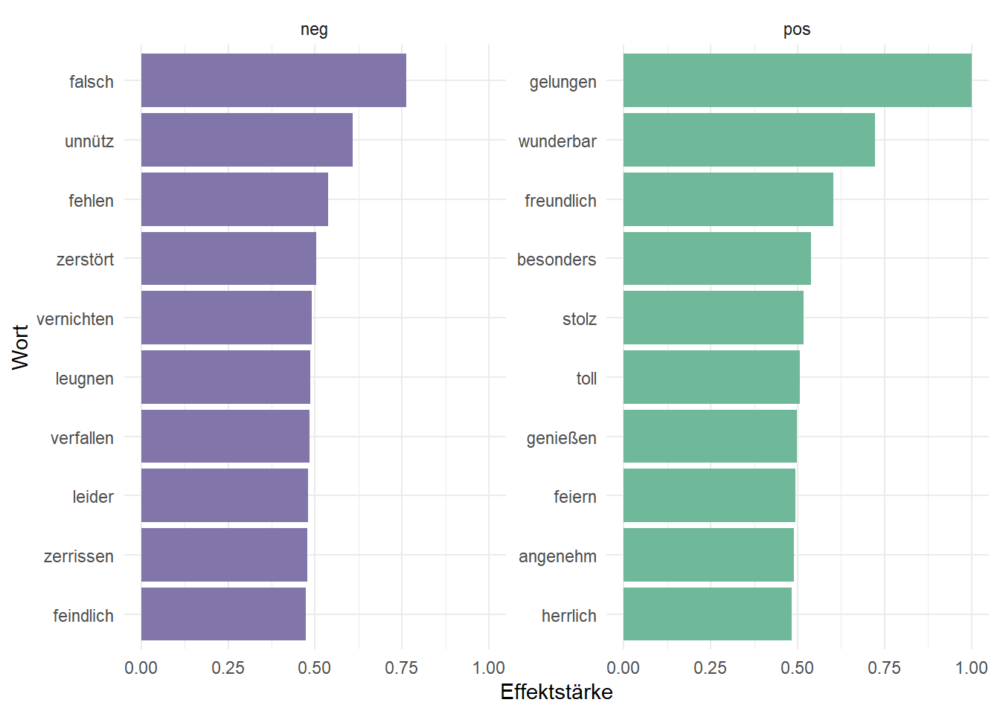
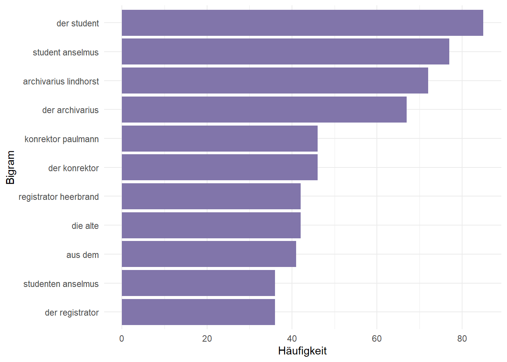
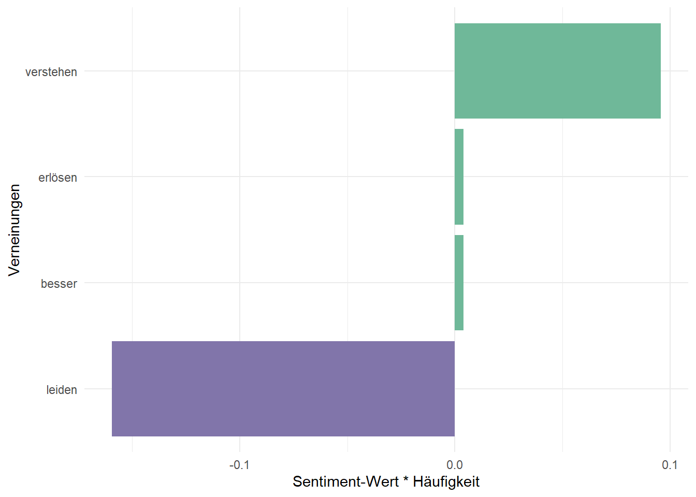

library(tokenizers)
library(tidyverse)
library(tidytext)
library(ggthemes)
library(topicmodels)
library(tm)Textanalyse von E.T.A-Hoffmanns “Der goldene Topf”
Datenimport
Textanalyse von E.T.A-Hoffmanns “Der goldene Topf”.
topf <- read.delim2("https://www.gutenberg.org/cache/epub/17362/pg17362.txt")
topf <- as_tibble(topf)
topf <- topf[-c(1:24, 2678:2979), ]
topf# A tibble: 2,653 × 1
The.Project.Gutenberg.eBook.of.Der.Goldene.Topf
<chr>
1 DER GOLDENE TOPF
2 von
3 E.T.A. HOFFMANN:
4 Mit 11 Federzeichnungen von Edmund Schaefer
5 [Illustration: Titelbild. Die Frauenkirche in Dresden]
6 Erstes bis fünftes Tausend
7 Verlag von Gustav Kiepenheuer Weimar 1913
8 ERSTE VIGILIE.
9 Die Unglücksfälle des Studenten Anselmus. Des Konrektors Paulmann
10 Sanitätsknaster und die goldgrünen Schlangen.
# ℹ 2,643 more rowsTokenisierung
topf_token <- topf %>%
unnest_tokens(output = token, input = The.Project.Gutenberg.eBook.of.Der.Goldene.Topf) %>%
filter(str_detect(token, "[a-z]"))
topf_token# A tibble: 29,219 × 1
token
<chr>
1 der
2 goldene
3 topf
4 von
5 e.t.a
6 hoffmann
7 mit
8 federzeichnungen
9 von
10 edmund
# ℹ 29,209 more rowsEntfernen der Stop-Words
data(stopwords_de, package = "lsa")
stopwords_de <- tibble(word = stopwords_de)
stopwords_de <- stopwords_de %>%
rename(token = word)
topf_token <- topf_token %>%
anti_join(stopwords_de)Joining with `by = join_by(token)`topf_token %>%
count(token, sort = TRUE) %>%
print()# A tibble: 5,508 × 2
token n
<chr> <int>
1 er 446
2 anselmus 291
3 archivarius 160
4 denn 151
5 du 144
6 nun 137
7 ihn 118
8 veronika 105
9 student 97
10 wohl 94
# ℹ 5,498 more rowsSentimentanalyse
data(sentiws, package = "pradadata")
topf_senti <- topf_token %>%
inner_join(sentiws, by = c("token" = "word")) %>%
select(-inflections)Warning in inner_join(., sentiws, by = c(token = "word")): Detected an unexpected many-to-many relationship between `x` and `y`.
ℹ Row 2698 of `x` matches multiple rows in `y`.
ℹ Row 3187 of `y` matches multiple rows in `x`.
ℹ If a many-to-many relationship is expected, set `relationship =
"many-to-many"` to silence this warning.topf_senti# A tibble: 600 × 3
token neg_pos value
<chr> <chr> <dbl>
1 glücklich pos 0.115
2 besonders pos 0.539
3 schnell pos 0.117
4 lachen pos 0.0135
5 entziehen neg -0.0048
6 weise pos 0.224
7 festlich pos 0.202
8 kurz neg -0.0048
9 langsam neg -0.0167
10 einsam neg -0.163
# ℹ 590 more rowstopf_senti %>%
count(token, neg_pos, sort = TRUE) %>%
ungroup() %>%
group_by(neg_pos) %>%
slice_max(n, n = 10)%>%
ungroup() %>%
mutate(token = reorder(token, n)) %>%
ggplot(aes(n, token, fill = neg_pos)) +
geom_col(show.legend = FALSE) +
facet_wrap(~neg_pos, scales = "free_y") +
labs(x = "Häufigkeit",
y = "Wort") +
theme_minimal() +
scale_fill_tableau(palette = "Nuriel Stone")
topf_senti %>%
group_by(neg_pos) %>%
summarise(polarity_sum = sum(value),
polarity_count = n()) %>%
mutate(polarity_prop = (polarity_count / sum(polarity_count)) %>%
round(2))# A tibble: 2 × 4
neg_pos polarity_sum polarity_count polarity_prop
<chr> <dbl> <int> <dbl>
1 neg -29.5 184 0.31
2 pos 72.3 416 0.69topf_senti %>%
distinct(token, .keep_all = TRUE) %>%
mutate(value_abs = abs(value)) %>%
group_by(neg_pos) %>%
top_n(10, value_abs) %>%
mutate(token = reorder(token, value_abs)) %>%
ggplot(aes(value_abs, token, fill = neg_pos)) +
geom_col(show.legend = FALSE) +
facet_wrap(~neg_pos, scales = "free_y") +
labs(x = "Effektstärke",
y = "Wort") +
theme_minimal() +
scale_fill_tableau(palette = "Nuriel Stone")
n-gram - Analyse
Häufigkeiten der Bigramme
topf_bigram <-
topf %>%
unnest_tokens(bigram, The.Project.Gutenberg.eBook.of.Der.Goldene.Topf, token = "ngrams", n = 2) %>%
filter(!is.na(bigram))
topf_bigram %>%
count(bigram, sort = TRUE) %>%
print()# A tibble: 19,046 × 2
bigram n
<chr> <int>
1 in der 89
2 der student 85
3 student anselmus 77
4 archivarius lindhorst 72
5 der archivarius 67
6 in den 49
7 in die 49
8 der konrektor 46
9 in dem 46
10 konrektor paulmann 46
# ℹ 19,036 more rowsOhne Stopwords
topf_bigra_sep <- topf_bigram %>%
separate(bigram, c("word1", "word2"), sep = " ")%>%
filter(!word1 %in% stop_words$word) %>%
filter(!word2 %in% stop_words$word)
topf_bigra_sep %>%
unite(bigram, word1, word2, sep = " ") %>%
count(bigram, sort = TRUE) %>%
slice_max(n, n = 10)%>%
mutate(bigram = reorder(bigram, n)) %>%
ggplot(aes(n, bigram)) +
geom_col(fill = "#8175aa") +
labs(x = "Häufigkeit",
y = "Bigram") +
theme_minimal()
Beitrag von Verneinungen zu Sentimenten
Verneinungen <- c("nicht", "nie", "niemals", "keine", "kein")
topf_bigra_sep %>%
filter(word1 %in% Verneinungen) %>%
inner_join(sentiws, by = c(word2 = "word")) %>%
count(word1, word2, value, sort = TRUE) %>%
mutate(Beitrag = n * value) %>%
arrange(desc(abs(Beitrag))) %>%
head(20) %>%
mutate(word2 = reorder(word2, Beitrag)) %>%
ggplot(aes(n * value, word2, fill = n * value > 0)) +
geom_col(show.legend = FALSE) +
labs(x = "Sentiment-Wert * Häufigkeit",
y = "Verneinungen") +
theme_minimal()+
scale_fill_tableau("Nuriel Stone")
Themenanalyse
topf_dtm <- DocumentTermMatrix(topf_token)
topf_lda <- LDA(topf_dtm, k = 4, control = list(seed = 42))topf_themen <- tidy(topf_lda, matrix = "beta")
topf_themen <- topf_themen %>%
group_by(topic) %>%
slice_max(beta, n = 10) %>%
ungroup() %>%
arrange(topic, -beta)
topf_themen %>%
mutate(term = reorder_within(term, beta, topic)) %>%
ggplot(aes(beta, term, fill = factor(topic))) +
geom_col(show.legend = FALSE) +
facet_wrap(~ topic, scales = "free") +
scale_y_reordered() +
theme_minimal() +
scale_fill_tableau("Nuriel Stone")